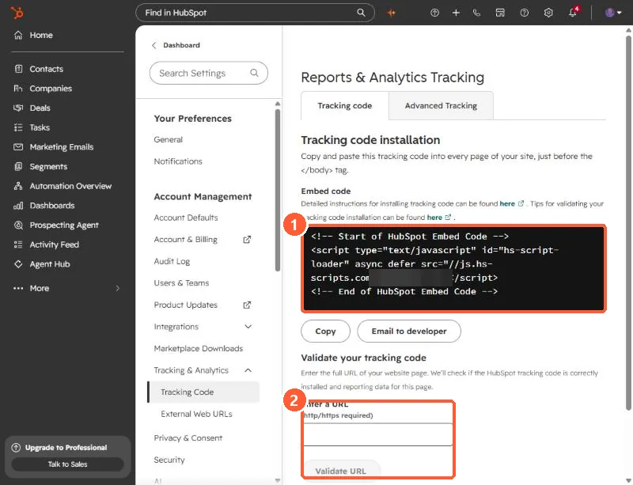
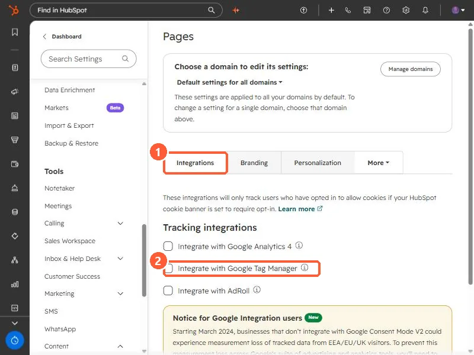
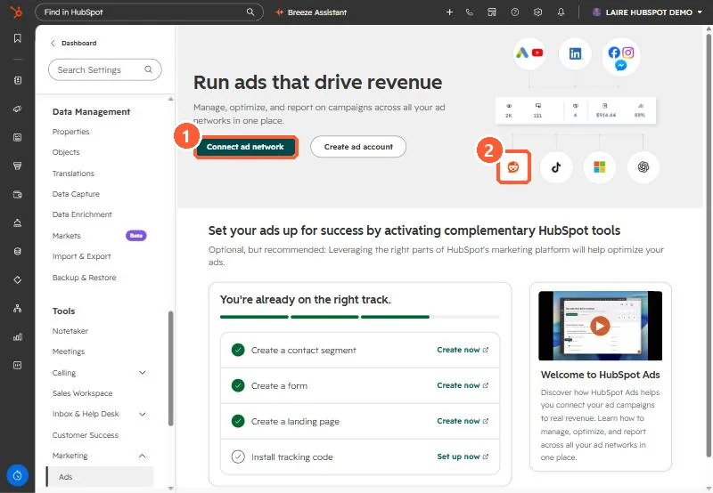

Short answer
Copy the tracking code from Settings, Tracking & Analytics, Tracking Code and paste it before the closing </body> tag on every page of any site not hosted on HubSpot (HubSpot pages have it already). It is one script tag that loads a file named after your Hub ID from hs-scripts.com, which is also how you check a site: view the source and search for YOUR_ID.js. Google Tag Manager and GA4 can run on HubSpot-hosted pages from Settings, Content, Pages, Integrations. Ad pixels install from the ads tool after you connect the ad account, and load wherever the tracking code does.
1. Get the code
Open Settings, Tracking & Analytics, Tracking Code. The embed code (1) is for your account, and Validate your tracking code (2) tests a page. The Hub ID is blurred here.


It is a single script tag. My demo portal's, hosted in the na2 data center, looks like this:
<!-- Start of HubSpot Embed Code -->
<script type="text/javascript" id="hs-script-loader" async defer src="//js-na2.hs-scripts.com/HUB_ID.js"></script>
<!-- End of HubSpot Embed Code -->Accounts in the default data center load from js.hs-scripts.com. Use the exact code your account shows rather than editing the host by hand.
2. Install it
- HubSpot-hosted pages: nothing to do, the code is already on them.
- Any site: paste it before
</body>on every page, usually in the site's footer template so new pages get it too. - Wix: in the site dashboard, Settings, Advanced, Custom Code, Add Custom Code. Paste the code, apply it to All pages with Load code on each new page, and place it in Body - end. That also loads chatflows on every page.
- WordPress: the HubSpot plugin adds it. See the WordPress plugin.
- Tag manager: loading it through Google Tag Manager works, but hides it from the page source (section 3).
Then add the site's domain to Additional site domains in Advanced Tracking, or form submissions from it can be flagged as spam. See forms and spam.
3. Check that it is working
- Open a page, right-click, View page source, and search for your Hub ID followed by
.js. You may see "HubSpot Embed Code" or "Async HubSpot Analytics Code"; either means it is installed. - To confirm it loads, open the browser's Network tab, refresh, and look for the Hub ID file. A 200 or 304 status means it loaded.
- In Validate your tracking code, enter the full URL with http or https. HubSpot tests the page and emails the result. Some sites cannot be tested this way and give a false failure, so fall back to the manual check.
If the code is loaded through a tag manager, it will not be in the page source. Check the Network tab instead.
4. Find which companies run HubSpot
The same check works on other sites, for example to see which companies in your CRM use HubSpot. Fetch each homepage and search the HTML:
hs-scripts.com/NUMBER.js tracking code; NUMBER is the account's Hub ID
hsforms.net embedded HubSpot forms; does not prove tracking- Keep "forms only" and "tracking code" as separate results. They are different signals.
- Sites that load tracking through a tag manager will not show it in a plain HTML fetch. Treat a miss as unknown, not "no HubSpot".
- Write results to a property you control and review a sample before writing in bulk.
- Fetch one page per site, pace your requests, and identify your script in its user agent.
The number in the file name is the portal ID. See finding a portal ID.
5. Google Tag Manager and GA4 on HubSpot pages
In Settings, Content, Pages, Integrations (1), tick Integrate with Google Tag Manager (2), or Google Analytics 4. AdRoll is listed there too.


- The tag manager then runs on all HubSpot-hosted content: landing pages, website pages, blog and knowledge base.
- External sites need GTM added separately.
- To run it on only some HubSpot domains, add the GTM code manually instead.
- It needs Marketing Hub Professional or Enterprise, or Content Hub Starter or higher.
- If your cookie banner requires opt-in, these integrations only track visitors who opted in. See cookies and Consent Mode.
6. Ad pixels
Pixels and tags such as the Facebook pixel, Google conversion tag and LinkedIn Insight Tag install from the ads tool. Connect the ad account first (1):


- Once installed, a pixel loads alongside the tracking code on every HubSpot-hosted or external page that has it.
- Only the user who connected the Facebook Ads account can install the Facebook pixel. Installers need the Ads Publish permission.
- Pixels follow your cookie banner settings.
See ads lead syncing and audiences.
7. What is changing for 2027
- Data center hosts. Tracking code hosts follow your account's data center, such as
js-na2.hs-scripts.com. A detection script that only looks forjs.hs-scripts.commisses those accounts; search forhs-scripts.com/instead. - Consent decides what loads. With an opt-in banner, GTM, GA4 and pixels added through HubSpot only track visitors who opt in, and Google's Consent Mode affects what Google can measure in the EEA, EU and UK.
Common questions
Do I need the tracking code on HubSpot pages?
No. HubSpot-hosted pages include it already.
The validator says my code is missing, but I installed it.
Some sites cannot be tested by the validator. Check the page source or the Network tab for your Hub ID file.
Can I see if a competitor or prospect uses HubSpot?
View their page source and search for hs-scripts.com/. A miss can still mean the code is loaded through a tag manager.
Why do pixels not fire for some visitors?
With an opt-in cookie banner, pixels only load for visitors who accept.